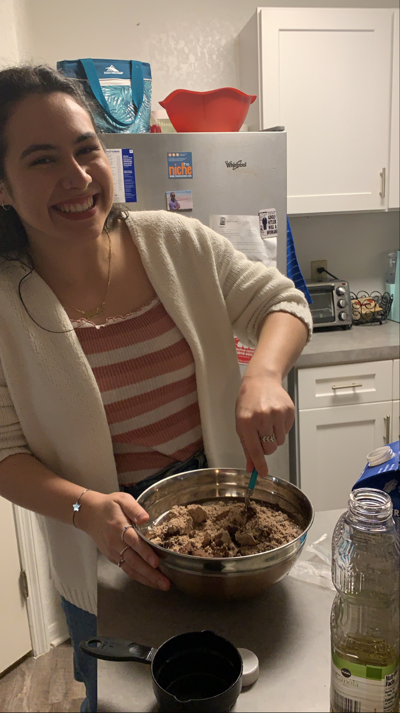
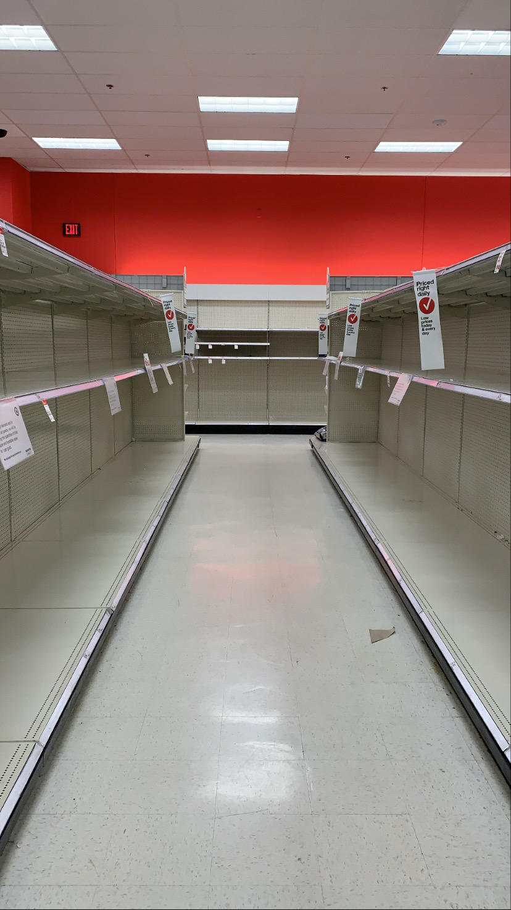
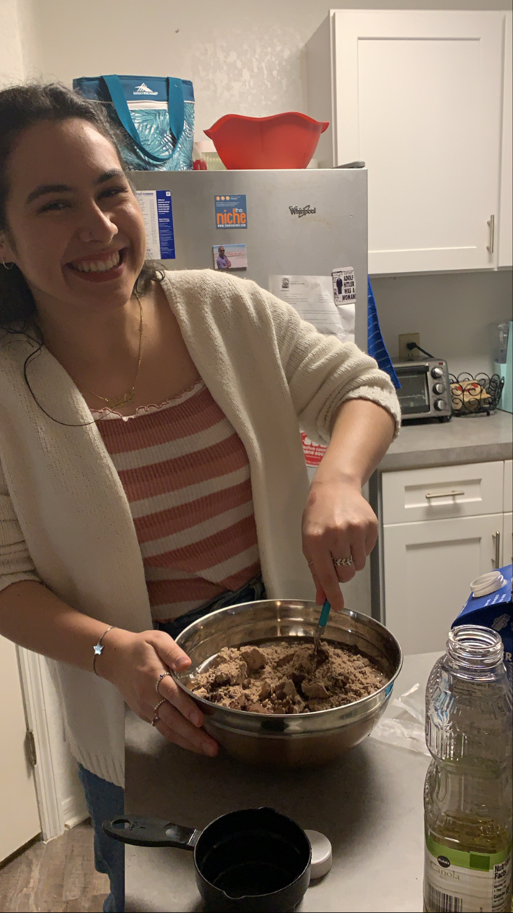
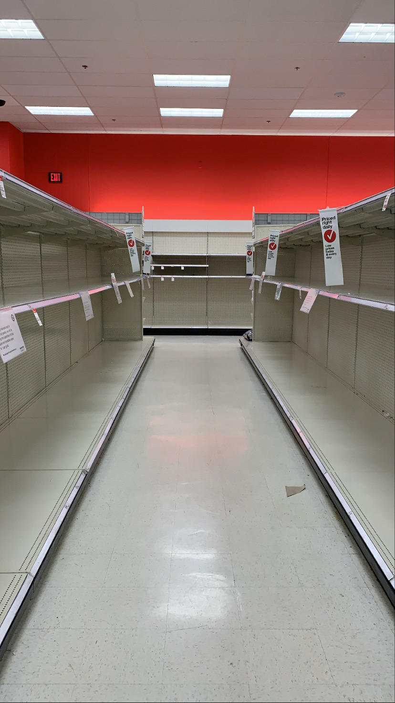

This was the time I was in my ultimate rebel era. I have been a rebel many times in my life, but it takes particular courage to go against your Indian parents as the eldest child and declare you are not getting a job. The rules are set for you early on, a guidebook you are supposed to follow without question. I'm grateful my dad listened during this phase (They have always been supportive but have learned to be patient with me and communicate better).
Approaching my last semester of undergrad, I had recently discovered a passion for data science and was adamant about avoiding the typical 9-5 job after graduation. My options were limited, but there was a chance to attend University of Florida for an exchange semester. Having never studied abroad, I craved that experience. Florida sounded perfect.
Boarding that flight from India to the University of Florida marked a pivotal chapter in my life. One that would shape many of my future decisions.
I will never forget Katelyn waiting at Gainesville airport that January night. Though we had only communicated online about the room I was subleasing, she offered to pick me up late at night. That first night, jet-lagged and overwhelmed, she simply handed me the keys and let me rest. She spent the next day, showing me around the city, the campus, confusing bus routes, hidden coffee shops and helped me navigate getting a phone plan. Who knew that simple act of kindness would blossom into a lifelong friendship? The kind where I would later celebrate Thanksgiving with her family and attend her housewarming party. The one where I know I can call anytime, certain she will listen. To this day, her warmth reminds me that some friendships are simply destined to be.
My housing decision was deliberate, American roommates instead of seeking out the Indian community. Abby, Natalie, and Melissa welcomed me with genuine warmth and helped me settle in. Our "brownie, wine, and movie nights" quickly became sacred tradition, with Natalie experimenting with vegan baking that we would eat regardless of the outcome. My favorite memory remains our Galentine's Day celebration, a sunset drive to a vegan food truck where we laughed, explored, and shared life stories beneath a painted Florida sky. To this day, Abby remains one of my closest friends and biggest cheerleader.
American education surprised me with its dynamic nature. Class discussions were refreshingly lively, professors expected active participation, not just silent absorption. Students challenged ideas openly, something often considered disrespectful back home. Suddenly, grades weren't determined solely by exams but by engagement and critical thinking.
To adapt to this new system, I decided to stay on campus during spring break to focus on studies. But as soon as the break ended, everything changed. COVID arrived abruptly. Classes moved online, campus emptied, and flights canceled worldwide.
Those uncertain weeks were terrifying. I had no idea how health insurance worked in this foreign country while Florida seemed bizarrely divided, most people still out in pools partying while others isolated completely. When evacuation flights were finally announced by the Indian government, securing a spot felt like winning an impossible lottery. Getting home involved a grueling 46 hours at airports and on flights between the US and India, followed by 14 days of quarantine in an Indian hotel room.
Till this day the connections and the people remain my most valuable souvenirs from Florida. What began as an adventure to break the conventional path became a testament to human connection across cultures. Though COVID cut short many planned experiences, it deepened the ones I did have. The education was valuable, but the people, those who offered kindness without expectation were the true highlight of my American journey.
 


